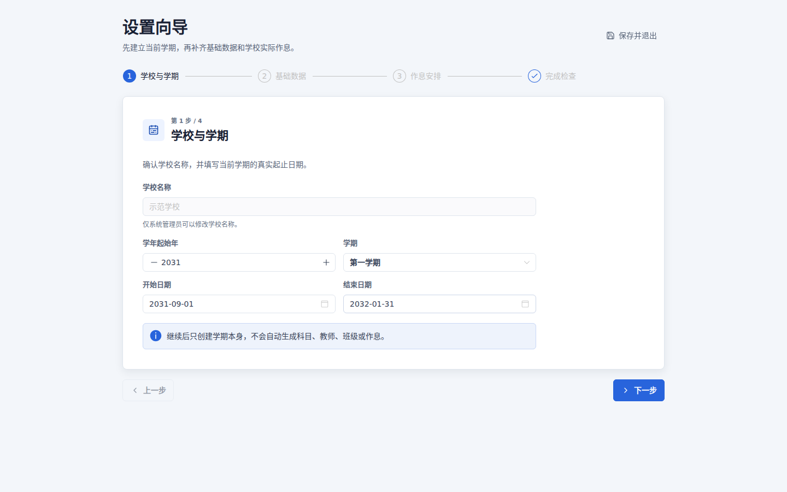
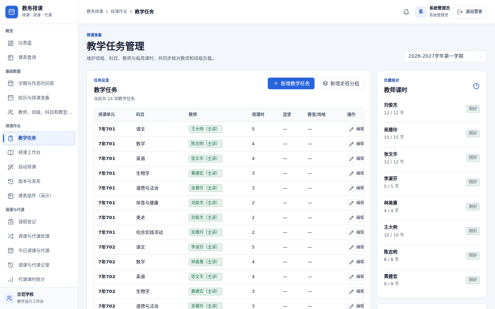
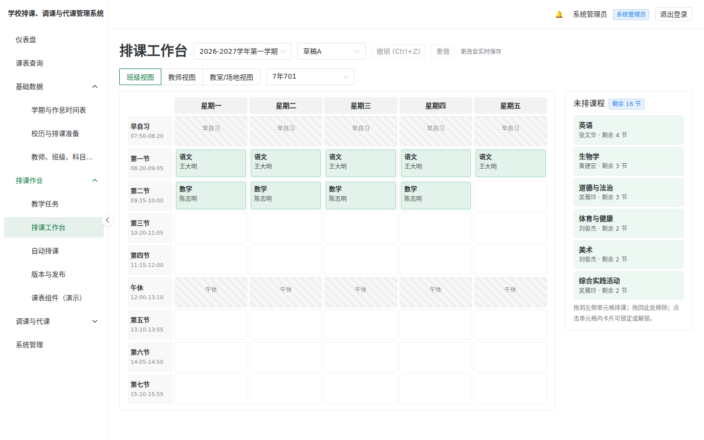
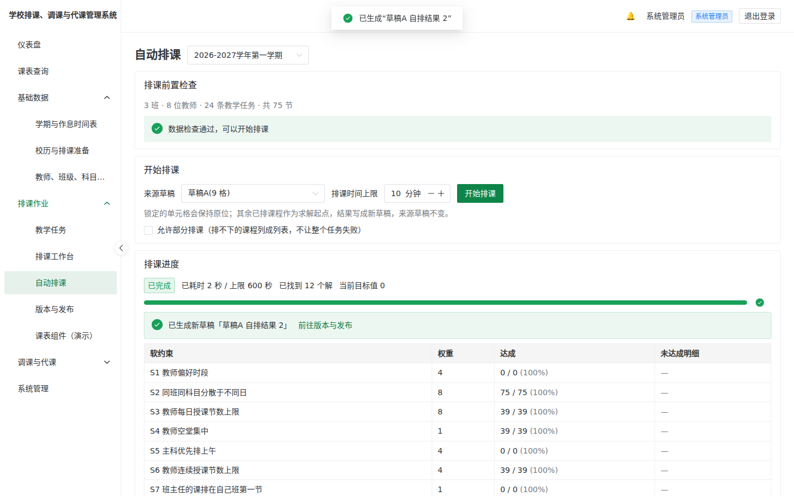
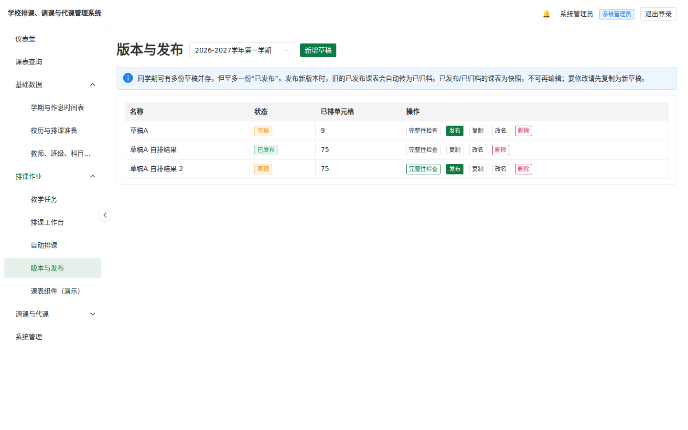
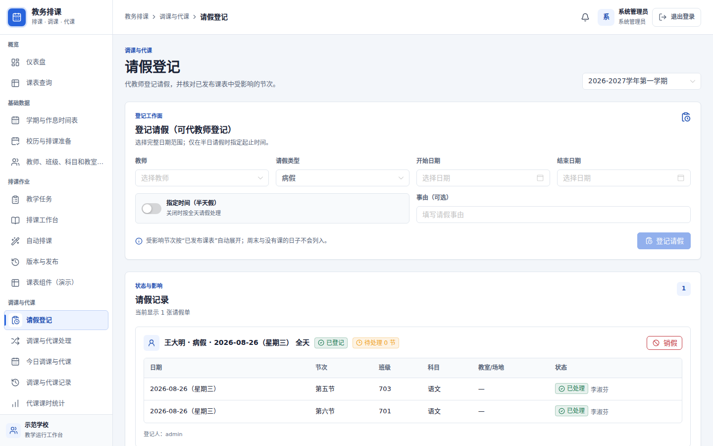
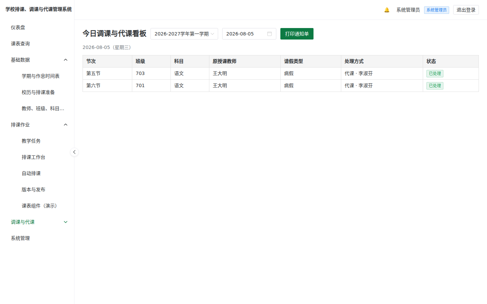
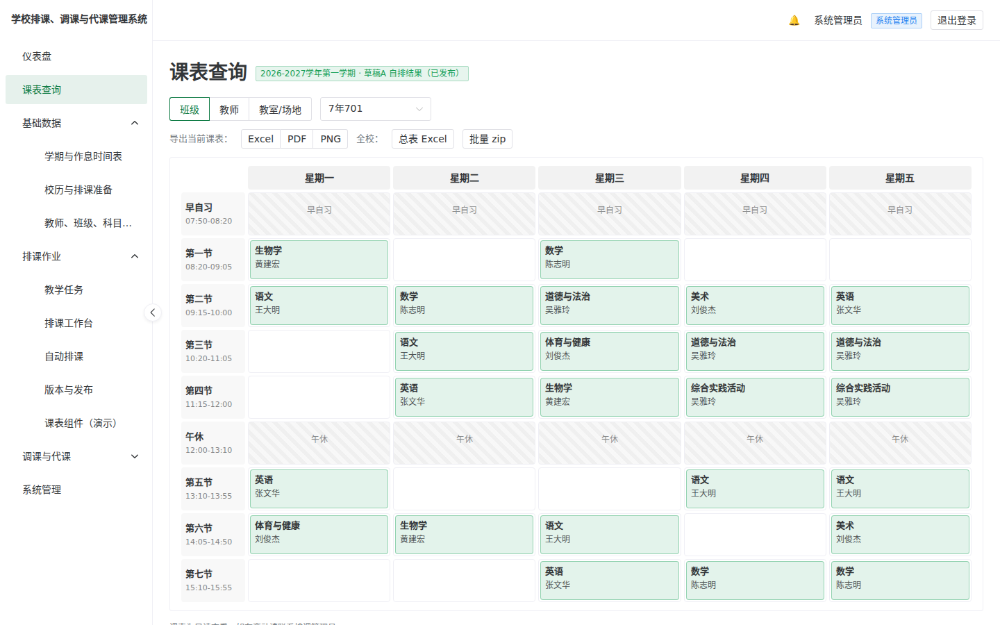
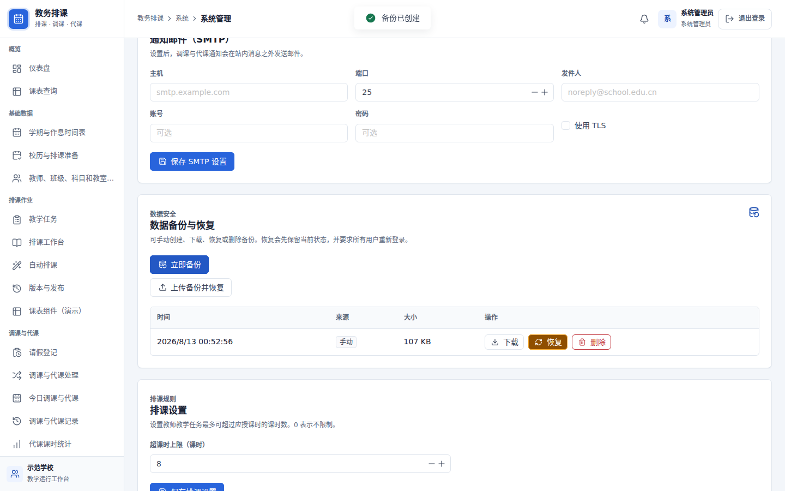

排课管理员操作手册
从零开始,带你把一整个学期的排课与调课与代课工作,在这套系统里走一遍。不需要程序背景,照着章节做,你就能独立上手。
如何使用本手册
这本手册照着「一个学期的实际流程」编排:先把学校的基础数据建好,再排课、发布,学期中再处理请假与调课与代课,最后导出与备份。第一次使用建议从第 3 章「设置向导」开始照做。
系统里的四种角色
登录后右上角会显示你的角色。不同角色看得到的功能不同——本手册主要写给排课管理员。
| 角色 | 负责什么 | 看得到的页面 |
|---|---|---|
| 系统管理员 | 系统安全、账号角色、备份恢复和故障处理 | 全部业务页面与系统管理 |
| 教务主任 | 全校监督、校历、全校请假和调课与代课 | 全校查询、草稿只读、日常运行和统计；不能编辑核心排课或发布 |
| 排课管理员 | 基础数据、教学任务、排课草稿、自动排课和发布 | 排课主流程与日常运行；不能管理账号或备份恢复 |
| 教师 | 查看已发布课表并处理本人事务 | 全校已发布课表、本人请假、通知和本人代课课时；看不到草稿 |
同一账号可以兼任多个固定角色，权限取并集。只要兼任排课管理员，登录后默认进入管理视角，同时仍能登记本人请假、确认本人通知和查看本人统计；系统不会用“切换角色”临时改变授权。
菜单导航
顶部只显示学校、当前学期、通知、帮助和账号。左侧直接按“学期准备、排课主流程、日常运行、报表、系统管理”五组展示按职责过滤的页面；仪表盘另提供最多三个固定快捷入口。本手册每一步都会用面包屑标出位置,例如 排课主流程›教学任务。
| 角色 | 仪表盘固定快捷入口 |
|---|---|
| 系统管理员 | 排课工作台 · 教学任务 · 今日看板 |
| 排课管理员 | 排课工作台 · 教学任务 · 今日看板 |
| 教务主任 | 课表查询 · 今日看板 · 版本与发布 |
| 教师 | 课表查询 · 请假登记 · 通知 |
快捷入口由角色固定提供，不保存个人排序或最近访问状态；它不会扩大权限，也不会绕过发布、删除、恢复或权限变更的检查。侧边栏五组页面始终保留所有获准入口。
系统只有一个当前学期。只有系统管理员和排课管理员可以切换；教务主任和教师只能查看当前上下文。历史或归档学期可查询和复制，但默认只读，旧链接也不能绕过后端写入或发布保护。
提示=让你更省力的小技巧;注意=容易忽略但重要;小心=做错会有后果的操作;场景=模拟一个真实情况带你操作。书中截图取自一个 3 班、8 位教师的小型测试学期，操作方式与更大规模学校相同。
这套系统能帮你做什么
如果你现在用 Excel 手工排课、用纸质登记表或微信群处理临时调课与代课，这套系统要解决的正是那些最耗精力、最容易出错的环节。
它帮你收掉的三件苦差事
- 排课的冲突检查——拖动一节课时,系统会实时提示「王老师这节已经在 302 班有课」,不必自己逐项核对整张表。排不出来时,还会用通俗说明指出是哪个条件造成冲突。
- 学期中的调课与代课全流程——老师请假,系统自动列出受影响的每一节、推荐当节有空又同科的代课老师、发通知给对方、月底自动结算代课课时。这通常是排课管理员最零碎、最怕漏掉的工作。
- 课表的产出与保存——一键导出各种格式的课表、全校总表、批量打包;每天自动备份,数据不怕不见。
为什么选它,而不是继续用现有做法
| 面向 | 这套系统 |
|---|---|
| 费用 | 完全免费、开源(MIT),没有每人授权费、没有订阅费 |
| 数据隐私 | 单校自建,数据只留在学校自己的机器,不上任何云端第三方 |
| 适用学制 | 支持小学、初中、普通高中、综合高中和中职，并允许同一学期维护多套作息时间表 |
| 语言与用语 | 统一使用简体中文和全国中小学通用教务用语 |
| 排课引擎 | 内置自动排课(可处理连堂、走班、协同教学、教师不可排时段等) |
不确定是否适用？可先按第 2 章的最小数据组建立一个小型学期，跑完“排课 → 发布 → 请假 → 代课 → 月结”流程。
开始前:准备哪些数据
正式构建前,先把下列列表准备好(电子文件最佳)。系统在「导入数据」步骤提供 Excel 模板可下载,你把数据填进去上传即可批量创建,不必逐项手打。
核心五份列表
| 列表 | 建议字段 | 备注 |
|---|---|---|
| 教师 | 姓名、任教科目、基本课时数、行政减课、电子邮箱、手机号、即时通讯账号 | 电子邮箱用于接收调课与代课通知；勾选后可同时创建教师登录账号 |
| 班级 | 年级、班名、学制、班主任、(中职)专业类别 | 小学可指定班主任 |
| 科目 | 科目名称、(可选)是否主科 | 选模板时已带入常见科目,可增修 |
| 教室/场地 | 名称、类型（普通教室/专用教室）、容量 | 如科学实验室、体育馆、实训场地 |
| 教学任务 | 班级、科目、任课教师、每周节数、(连堂)、(教室/场地需求) | 这是排课的核心输入,见第 4 章 |
选择“初中（空白模板）”，再填写作息时间并添加 3~5 位教师、2~3 个班级和几项教学任务，即可体验完整流程。正式数据可以在确认采用后再批量导入。
公开模板只提供可编辑的初中科目参考项和一张空白作息时间表，不默认设置铃声、上课时段、周课时或校历。请按学校实际情况填写。
设置向导
全新系统第一次登录时会直接进入五步骤设置向导。中途退出后，重新登录会从上次保存的步骤继续。
登录与首次改密码
- 开启系统网址——本机是
http://localhost,校内其他电脑用主机的局域网 IP(例如http://192.168.1.50)。 - 使用管理员账号登录——账号和密码由安装系统时的设置决定（见部署文档）。
- 依提示修改密码——第一次登录会强制改一次密码,改完才会进入系统。
五步骤
- 学校模板——选择“初中（空白模板）”，系统带入科目参考项和空白作息时间表。
- 学年学期——设置学年起始年和学期，例如“2026-2027学年第一学期”。此步骤会创建学期。
- 作息时间表——模板创建的是空白表。请点击“打开作息时间表编辑器”，按学校实际作息添加可排课节次、上课时间和下课时间。
- 导入数据——下载 Excel 模板，填写教师、班级和科目后上传并批量创建（可以跳过，稍后在“基础数据”中补充）。
- 完成——显示已创建的数据摘要(科目、教师、班级、教室/场地各有多少条数据),按「完成，前往教学任务管理」。

中途关掉浏览器没关系——下次登录会从上次的步骤接续。系统管理员和排课管理员也可以跳过向导，或稍后从系统管理重新启动；重新启动不会删除现有数据。
完成向导后，请进入 学期准备›校历与排课准备，设置学期起止日期和特殊日期，并在检查无误后确认排课准备完成。
教学任务管理
排课主流程›教学任务
「教学任务」就是决定哪位老师、教哪个班、哪一科、每周几节。这是排课的核心输入——教学任务建好,才能开始排课。
创建一项基本教学任务
- 选班级——例如 301 班。
- 选科目——例如语文。
- 指定任课教师——例如王老师。
- 填每周节数——例如 5 节。
- (选填)连堂与教室/场地需求——如需 2 节连上,设置连堂;需要特定教室/场地(如实验室)可指定教室/场地类型。

高级结构
| 情况 | 怎么建 |
|---|---|
| 走班分组（如高二选修课程，多班同时开设多门课程） | 先将多个班级组成一个分组，再为该分组创建多项教学任务；排课时整组课程保持同一时段 |
| 协同教学(一门课两位老师一起上) | 同一项教学任务里加入多位教师(第一位为主讲教师) |
| 连堂(如实习 3 节连上) | 在教学任务设置连堂长度与每周次数 |
页面右侧会实时显示每位教师的「教学任务节数 vs 基本课时」。超课时会显示为红色(如安排 22 节、基本课时 20 节 → 显示 +2),便于及时发现工作量不均。
系统管理员可在 系统管理›排课设置 设置允许的超课时数。教学任务超过教师“基本课时减行政减课数再加上限”时会被阻止；未填写基本课时的教师不参与此项校验。
若某班每周教学任务总节数超过可排的节次数,系统会警告(该班无法完成排课)。走班群组的成员班级若作息时间表不一致,系统会拒绝创建。
整学期教学任务很多时,用 Excel 批量导入教学任务,比逐项点快得多。
手动排课工作台
排课主流程›排课工作台
工作台是一张拖拽式周课表。左侧是还没排的教学任务列表(附剩余节数),你把课拖进格子里即可。适合微调,或想完全手动掌控时使用。
基本操作
- 从左侧列表拖拽——把一项未排教学任务拖进课表格子。
- 查看实时冲突——可放的位置显示绿框;有冲突时显示红框,鼠标悬停后会显示原因(用节次名称说明,如「王老师 周一第一节 已有 302 班数学」)。
- 锁定重要单元格——不希望被更动的课,点锁定图示固定住。
- 移除——把格子里的课拖回左侧列表即取消。

好用的辅助
- 撤销 / 重做——按 Ctrl+Z 可撤销最近一次操作。
- 三视角切换——同一份课表可用「班级 / 教师 / 教室/场地」三种角度查看,各视角实时同步(在班级视角安排的课程,会立即显示在教师视角中)。
- 自动存储草稿——编辑过程会自动存,不必担心忘记存档。
手动排课适合「补几节」或「照校内惯例微调」。想一次把整周排满,直接用下一章的自动排课,再回工作台微调通常最省力。
自动排课
排课主流程›自动排课
系统内置排课引擎,能在遵守各种硬性规则(教师和教室/场地均不冲突、连堂不跨午休、教师不可排时段…)下,自动排出一整周的课表。
操作流程
- 选择学期与作为输入的来源草稿。
- 看排课前置检查——系统先做 pre-flight,确认数据合理(如没有老师教学任务数超过可排格数)。通过会显示「数据检查通过，可以开始排课」。
- 设置排课时间上限(默认 10 分钟)后,按「开始排课」。
- 观察进度——页面显示已找到几个解、目前目标值、经过时间。
- (可选)提前结束——找到解后可按「提前结束」,直接取当前最佳解。
- 获取结果——排好后生成一份新草稿「来源名 自排结果」,来源草稿不会被动到,排坏了随时可丢。

排不出来怎么办?系统会说易懂说明
如果条件互相矛盾排不出来,系统不会只丢一句「失败」,而是做冲突定位,告诉你是哪几件事凑在一起、松开哪一个就好,并附上具体数字与建议。例如:
报告显示「301 班语文 12 节单节课,但每日上限 2 节 × 5 天 = 10 节」。你就知道:把每日上限放宽,或减少该科节数即可。系统还提供「一键照建议重试」。
勾选「允许部分排课」,系统会尽量排、把真的排不下的课列成「未排列表」告诉你是哪一班哪一科,而不是整个失败。
发布课表与全校查询
排课主流程›版本与发布
你可以同时保留多份草稿互相比较。满意哪一份,就把它「发布」——发布后全校师生就能查到这份课表。
发布流程
- 在版本列表找到要发布的草稿(可复制、改名、删除来管理多份)。
- 按「发布」并查看发布检查——系统会显示学期、版本、完整性结果和未排教学任务；检查结果变化后，旧确认会失效。
- 明确确认目标和影响——取消不会发送发布请求；若有未排完的课，只有再次确认后才可强制发布。
- 旧版自动归档——发布新版后,同学期原本已发布的那份会转为「已归档」。

发布后那份课表就固定下来,即使你之后改草稿也不影响它——这样调课与代课才有稳定的依据。要更新,就发布新的一份。
发布只允许当前且未归档的正式学期，由系统管理员或排课管理员执行；成功、取消后的零提交、权限拒绝和检查失效都会遵守确认与审计边界。教务主任可监督版本但不能发布。
全校查询
课表查询 是只读的查询页,可用班级 / 教师 / 教室/场地三种角度查已发布课表,手机也能看。教师登录时,默认直接显示本人课表。
学期中的调课与代课
这是学期开始后最日常、也最零碎的工作。系统把它拆成一条清楚的链:请假 → 找代课 → 通知 → 确认 → 看板 → 月结。
8.1 请假登记
调课与代课›请假登记
老师可以自己登记请假,排课管理员也能代登。
- 选教师、请假类型(公假/事假/病假…)。
- 填请假起止——可全天、半天、多天、跨周。
- 系统自动展开受影响节次——依已发布课表,列出这段期间他原本要上的每一节。跨周末只会展开上课日。
若要销假,系统会级联处理:已指派的代课老师会收到取消通知;已经上完的课不受影响(课时照算)。

8.2 调课与代课处理
调课与代课›调课与代课处理
请为每一节受影响的课程选择一种处理方式：
| 处理方式 | 意思 | 计课时? |
|---|---|---|
| 代课 | 找另一位老师代上 | 计 |
| 调课 | 两位老师互换节次 | 计 |
| 合班 | 并到他班一起上 | 默认不计(可改) |
| 自习 | 学生自习 | 不计 |
| 不处理 | 当天停课/弹性运用 | 不计 |
选择“代课”后，系统会列出推荐列表：优先推荐当节有空且任教同一科目的教师，并说明推荐理由（如“同科目教师 · 当天已在校 · 本月已代 2 节”）。课时较多的教师会排在后面。
指派后立即生效——没有「邀请/拒绝」流程(实际工作中,排课管理员通常已事先口头征得同意)。通知用于正式告知并请对方确认收到。若要撤回,退回待处理即可。
8.3 通知与确认
指派后,代课老师会收到站内通知(右上角铃铛,含未读数),若有设置 SMTP 也会收到 Email。老师点开可一键「确认收到」。
在“通知”页面切换到“确认看板”即可看到每一条的确认状态,对还没确认的人一键「再次提醒」。
8.4 今日调课与代课看板
调课与代课›今日调课与代课(仪表盘上也有)——一眼看到今天全部变更:谁代谁的课、教室有没有变。可打印 A4 公告单(传统公告格式)贴出来或发群组。

8.5 调课与代课记录
调课与代课›调课与代课记录——历史查询,可依教师、日期、请假类型筛选。查一位老师时,他「缺的课」和他「代的课」都会出现。
8.6 代课课时统计
调课与代课›代课课时统计——月结报表,依教师汇总代课节数与计费节数(合班/自习不计费),可导出 Excel。跨月的假单会自动依每一节的日期分月计算。教师本人也能查自己的明细。
① 到「请假登记」帮他登病假(今天全天)→ 系统列出他今天 4 节课。② 到「调课与代课处理」逐节选代课,从推荐列表各挑一位有空同科的老师。③ 对方收到通知、确认收到。④ 到「今日调课与代课」打印公告单。⑤ 月底「代课课时统计」自动把这几节算进代课老师的课时。全程不到几分钟。
导出课表
已发布的课表可从 课表查询 页的导出按钮输出成多种格式。
| 要什么 | 怎么拿 |
|---|---|
| 单一班级、教师或教室/场地课表 | Excel、PDF、PNG 三选一(PDF 内嵌中文字体,不会乱码) |
| 全校总表 | 一个 Excel 文件,每班一个工作表 |
| 全部班级一次拿 | 批量导出,打包成一个 zip |
单一课表所有登录者都能导出(课表本就全校可查);全校总表与批量打包限排课管理员以上。文件名为中文,直接就能归档。

系统管理
系统管理(限系统管理员)
学校信息
学校名称会显示在系统界面、导出的课表、代课通知邮件和 A4 公告中，保存后立即生效。安装时 `.env` 的 SCHOOL_NAME 只提供首次启动值，之后以系统管理中保存的名称为准。
重新执行设置向导
需要重新检查建校步骤时，可从系统管理重新启动五步设置向导。此操作只重置向导进度，不会删除已有学期或业务数据。
排课设置
超课时上限表示教师教学任务最多可超过其应授课时多少课时，默认 8，设置为 0 表示不限制。上限按“基本课时减行政减课数再加允许超课时”计算；基本课时为 0 表示尚未维护，不执行此项限制。
数据备份与恢复
- 每日自动备份——系统每天凌晨自动备份,默认保留最新 30 份、自动轮替。
- 立即备份——重大操作(升级、大量导入、换学期)前,建议先按一次。
- 下载 / 上传恢复——可下载备份文件异地保存;换主机或救援时上传恢复。
- 恢复的安全网——恢复前系统会自动先备份现状(可反悔),恢复完成后强制所有人重新登录。
恢复会覆盖目前所有数据。务必确认选对备份文件。所幸有「恢复前保护」这道自动备份垫底,误操作仍可救回。
备份文件存在同一台主机。硬盘坏掉就一起没了。请定期把备份文件下载到另一台电脑或云端硬盘(详见部署文件的「备份与恢复」)。

高风险操作与审计
备份恢复、核心数据永久或级联删除、账号和角色变更仅限系统管理员。界面会先列出具体目标和影响；取消确认不会提交命令，重复提交也会被拒绝。成功、拒绝和失败结果都会进入操作审计。课表发布同样需要检查、明确确认和审计，但由系统管理员或排课管理员执行。
Email 通知(SMTP,选填)
填写学校的 SMTP 服务器信息后，系统即可通过电子邮件发送调课与代课通知。未配置 SMTP 不影响其他功能，此时只发送站内通知。可以点击“发送测试邮件”验证配置。
开新学期复制向导
新学期不必从零建。可从现有学期复制教师/班级/科目/教室/场地/作息时间表,班级年级自动 +1(可关闭),毕业年级提示移除。两学期数据独立,改一边不影响另一边。
常见场景 FAQ
Q. 自动排课排不出来,怎么办?
看系统给的冲突定位报告——它会指出是哪个条件卡住、附上数字与建议。依建议放宽条件(如某科每日上限、教师不可排时段),或用「部分排课」先排大部分、再手动补未排的几节。
Q. 老师早上临时请假,最快的处理流程?
请假登记(当天全天)→ 调课与代课处理(逐节从推荐列表选代课)→ 对方收到通知确认 → 今日看板打印公告。见第 8 章场景框。
Q. 我们是完全中学,初中部高中部作息不同?
系统支持同学期多套作息时间表。在有两套以上作息时间表时,班级表单会出现「作息时间表」下拉,把不同部的班级指到对应的作息时间表即可(多数学校全校统一,则完全看不到这个字段,零负担)。
Q. 忘记密码了?
初始密码由安装设置决定;登录后改过的密码存在数据库。若都忘了,最务实的是恢复一份记得密码的旧备份,或请系统管理员协助。请妥善保管管理员密码。
Q. 老师收不到 Email 通知?
Email 是选填功能。若「系统管理」没设置 SMTP,就只有站内铃铛通知,这是正常的。要寄 Email 需填学校 SMTP 并可寄测试信验证。
Q. 数据会不会不见?
数据存在学校自己的主机。系统每天自动备份、保留 30 份。但请务必做异地备份(把备份文件下载到别处),主机硬盘坏掉时才救得回。
Q. 换到下学期,要重新建一次全部数据吗?
不用。用「开新学期复制向导」从上学期复制,年级自动进位,再微调即可。
还有问题? 系统的安装、升级、备份策略、域名 HTTPS 等「部署运维」细节,见项目的 docs/deploy/ 六篇部署文件。
报告错误或提供建议,请在本仓库创建 GitHub Issue:
这套系统是为第一线排课管理员而写的,你的实际使用反馈对它的改进最有帮助。
学校排课、调课与代课管理系统 · 排课管理员操作手册 · v1.2 · 开源免费(MIT)· 单校自建
本手册文字内容已更新至 v1.2.0；截图取自小型测试学期。